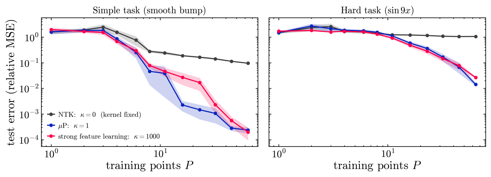

From the NTK to the tilted neuron law
Why wide networks trained the standard way stop learning features, how μP brings feature learning back, and what the Bayesian posterior of a wide one-hidden-layer μP network looks like, neuron by neuron. Every animation is computed, not drawn.
$\theta$ all parameters · $N$ width · $P$ training points $(x_i,y_i)$ · $r_i=f(x_i)-y_i$ residual · $K^{\rm NTK}$ tangent kernel · $K$ feature kernel · $\gamma$ output scale · $\kappa=\gamma^2/N$ · in Parts I–II $\eta$ is the learning rate, in Part III a small label-noise ridge, $K\to K+\eta I$
■ entropy (hidden layers) ■ energy (readout) ■ exchange rate $\kappa$ ■ gradient descent
Each clip starts when you press play and pauses when you scroll past it; full screen shows the small labels best. Where a figure has two buttons above it, they switch between a smooth and a hard target.
Part I
The NTK: a Newton's law for networks
Newton's law says how a body moves under a force. Gradient descent obeys a law of the same kind for the function a network computes, and in one limit the law can be solved.
1A network is a point in parameter space
A network with weights $\theta\in\mathbb R^p$ computes one function $f_\theta$. Drawing $\theta$ from a Gaussian, as every initialisation does, draws a random function: the prior over weights is a prior over functions.
Training moves the point. Gradient descent on the squared loss $L(\theta)=\tfrac12\sum_{i=1}^P\big(f_\theta(x_i)-y_i\big)^2$ steps downhill, $\theta_{t+1}=\theta_t-\eta\,\nabla_\theta L(\theta_t)$, and the function bends onto the data.
2The law of motion
In the small-step limit (gradient flow) the weights move as $\partial_t\theta=-\eta\sum_i r_i\,\nabla_\theta f_t(x_i)$, and the chain rule turns this into a law for the function itself:
The neural tangent kernel (Jacot et al. 2018) says how much the output at $x$ moves when one step is taken to fix the output at $x_i$.
3When the law can be solved
In general $K^{\rm NTK}_t$ depends on $\theta_t$, and the law is a nonlinear differential equation in $p$ dimensions. It closes when three conditions hold: gradient flow, infinite width in the NTK parametrisation ($\gamma=1$ in §8), and a positive-definite kernel. The kernel then stays at its initial value for the whole of training (Jacot et al. 2018), and with $K=K^{\rm NTK}_0$ on the training points the law is linear:
$$\partial_t r=-\eta Kr\ \Longrightarrow\ r(t)=e^{-\eta Kt}\,r(0),\qquad f_t(x)=f_0(x)-K(x,X)K^{-1}\big(I-e^{-\eta Kt}\big)\,r(0).$$As $t\to\infty$, $f_\infty(x)=f_0(x)+K(x,X)K^{-1}\big(y-f_0(X)\big)$: kernel regression with the tangent kernel.
4Spectral bias
Diagonalise the kernel on the data, $K=\sum_k\lambda_kv_kv_k^\top$. Each eigenmode is learned on its own clock:
$$f_t(x)-f_0(x)=\sum_k\big(1-e^{-\eta\lambda_kt}\big)\,a_k\,\phi_k(x),\qquad \phi_k(x)=K(x,X)\,v_k/\lambda_k,\quad a_k=-v_k^\top r(0).$$Mode $k$ needs about $1/(\eta\lambda_k)$ steps. The large eigenvalues belong to smooth eigenfunctions, so smooth shapes are learned first and wiggly ones last: spectral bias.
5What it says about generalisation
Off the data the network predicts with the kernel's eigenfunctions. A target whose power sits in the top eigenfunctions is learned from few samples; a target whose power sits in the tail needs many, however long one trains. The test error is set by how the target lines up with the kernel's spectrum: spectral alignment (Canatar, Bordelon & Pehlevan 2021).
6What the NTK misses
The closed form needs infinite width, the NTK parametrisation and small learning rates. Real networks are finite, are trained with large steps and with Adam, and large models are trained in μP. Above all the frozen kernel rules out what makes networks better than kernels: feature learning. A network can learn a target that sits in its kernel's tail only if the kernel itself moves. That is Part II.
Part II
NTK against μP: why features freeze, and how to unfreeze them
Whether the hidden layers move as the width grows is decided by how the output and the learning rate are scaled.
7What feature learning is
Feature learning is movement of the hidden representation that does not vanish as the network grows: $\Delta h^\ell(x)=h^\ell_t(x)-h^\ell_0(x)$ stays of order one per neuron as $N\to\infty$. Equivalently, the hidden kernels $K^\ell$, and with them $K^{\rm NTK}$, move by an amount that does not shrink with the width.
8Why the NTK parametrisation is lazy
Take one hidden layer, $f(x)=\tfrac{1}{\gamma\sqrt N}\sum_{i=1}^Na_i\,\varphi(h_i(x))$ with $h_i=w_i\cdot x/\sqrt d$ and all weights $\mathcal N(0,1)$, trained with learning rate $\eta\gamma^2$, the scaling that moves the function by $O(\eta)$ per step for every $\gamma$. One step of gradient descent changes
$$\Delta a_i\sim\eta\,\frac{\gamma}{\sqrt N},\qquad \Delta h_i\sim\eta\,\frac{\gamma}{\sqrt N}=\eta\sqrt{\htmlClass{c-kap}{\kappa}},\qquad \Delta f\sim\frac{1}{\gamma\sqrt N}\sum_{i=1}^N\big(\varphi\,\Delta a_i+a_i\varphi'\,\Delta h_i\big)\sim\eta .$$| $\gamma$ | learning rate | $\kappa=\gamma^2/N$ | function moves | hidden units move | |
|---|---|---|---|---|---|
| NTK | $1$ | $\eta$ | $1/N$ | $O(\eta)$ | $O(\eta/\sqrt N)\to0$: lazy |
| μP | $\gamma_0\sqrt N$ | $\eta\gamma_0^2N$ | $\gamma_0^2$ | $O(\eta)$ | $O(\eta\gamma_0)$: rich |
In the NTK parametrisation the function moves while every hidden unit stays where it started, so the kernel freezes and Part I applies. The standard PyTorch parametrisation at its largest stable learning rate ends up in the same kernel limit (Yang & Hu 2021). μP makes the output small and the learning rate large in proportion: the readout alone can no longer fit the data, so the hidden units must move. As a side effect the update per step no longer depends on $N$, so the best learning rate carries over from small to large widths.
The hidden movement $\Delta h\sim\eta\sqrt\kappa$ is the first appearance of the dial that runs through the whole map: $\kappa=1/N$ in NTK, $\kappa=\gamma_0^2$ in μP.
9The same on MNIST
10Watching the kernel reorder
Moving is not enough by itself; what matters is that the kernel moves the target to the front of its spectrum, where the clock of §4 is fast.
Part III
The Bayesian view: the tilted neuron law
Gradient descent is a dynamical problem in billions of dimensions, solvable only where nothing moves. Bayes asks the static question first: of all the networks that fit, where is most of the prior mass? For a wide network with one hidden layer the answer is one law for every neuron.
Model of Part III: one hidden tanh layer with input $(x,1)$, so a neuron is a point $w=(w,b)$ in the plane with $\varphi_w(x)=\tanh\big((wx+b)/\sqrt2\big)$; $f(x)=\tfrac{1}{\gamma\sqrt N}\sum_ia_i\,\varphi_{w_i}(x)$; all parameters iid $\mathcal N(0,1)$; $\kappa=\gamma^2/N$, and μP is $\kappa=1$. Two targets on $[-1.5,1.5]$: a smooth bump, $2e^{-4x^2}-0.7$, and a hard one, $\sin 9x$.
11Bayes is a filter
The posterior is the prior restricted to the networks that fit the data:
$$p_B(\theta\mid D)=\frac{p_0(\theta)\,\mathbb 1[\theta\in\mathcal M]}{Z_D},\qquad Z_D=p_0(\mathcal M),\qquad \mathcal M=\{\theta:f_\theta(x_i)=y_i\ \forall i\}.$$The evidence $Z_D$ is the chance that a random network already fits; predictions average over the posterior.
12Bayes counts, gradient descent travels
Bayes asks where most of the prior mass of the interpolating set lies. Gradient descent asks which fitting network it reaches first from its random start. The questions differ and the answers are often close; the Overview (§7) casts them as equilibrium against a quench.
13Neurons become a distribution
Neurons are exchangeable, so a network is an average over its neurons, $f(x)=\tfrac{1}{\sqrt\kappa}\tfrac1N\sum_ia_i\,\varphi_{w_i}(x)$. As $N\to\infty$ at fixed $\kappa$ the average becomes an expectation over a law $\rho(w,a)$:
$$f(x)\ \longrightarrow\ \frac{1}{\sqrt\kappa}\,\mathbb E_\rho\big[a\,\varphi_w(x)\big].$$Under the prior the readout $a$ is independent of $w$ with mean zero, so this average vanishes: a law that fits must couple each neuron's readout to its input weights. The rest of Part III finds that law.
14Why the law is tilted
Bayes conditions $N$ iid neurons on one number per data point: their average. Conditioning iid draws on an average tilts each of them exponentially, with one multiplier per constraint (Sanov's theorem, or Gibbs conditioning). For one point $(x_0,y_0)$, with $z=(wx_0+b)/\sqrt2$:
$$\rho(z,a)\propto\mathcal N(z;0,1)\,\mathcal N(a;0,1)\,e^{\lambda a\tanh z},\qquad \lambda=\frac{\sqrt\kappa\,y_0}{K},\quad K=\mathbb E_\rho\big[\tanh^2z\big],$$and $-\tfrac1N\log Z_D\to\mathrm{KL}(\rho\Vert p_0)$, the price per neuron of fitting.
15The derivation in three steps
For $P$ points the same argument gives one law for every neuron. With the readout integrated out the derivation is exact up to the last step.
1. Integrate out the readout (exact). Given the hidden weights, $f(X)=\tfrac{1}{\gamma\sqrt N}\Phi a$ with $\Phi_{\mu i}=\varphi_{w_i}(x_\mu)$ is linear in the Gaussian readout. Conditioning on $f(X)=y$ leaves
$$p_B(W\mid D)\propto\prod_{i=1}^N\mathcal N(w_i;0,I)\;\exp\!\Big[-\tfrac{\gamma^2}{2}\,y^\top K_N^{-1}y-\tfrac12\log\det\big(2\pi K_N/\gamma^2\big)\Big],\qquad K_N=\tfrac1N\sum_{i=1}^N\varphi_{w_i}\varphi_{w_i}^\top,$$so the hidden weights enter only through the $P\times P$ kernel $K_N$, and the readout given them is a Gaussian conditioned on a linear constraint.
2. Pull out one neuron (exact). One neuron changes the kernel by a rank-one term, $K_N=K_{-i}+\tfrac1N\varphi_{w_i}\varphi_{w_i}^\top$, and the Sherman–Morrison formula gives its law given all the others:
$$p(w_i\mid W_{-i},D)\propto\mathcal N(w_i;0,I)\,(1+s_i)^{-1/2}\exp\!\Big[\frac{a_{-i}(w_i)^2}{2(1+s_i)}\Big],\qquad a_{-i}(w)=\sqrt\kappa\,y^\top K_{-i}^{-1}\varphi_w,\quad s_i=\tfrac1N\varphi_{w_i}^\top K_{-i}^{-1}\varphi_{w_i}.$$A neuron is up-weighted by the square of the readout the others would give it.
3. Close the loop ($N\gg P$). The others' kernel becomes deterministic and the same for every neuron, $s_i=O(P/N)$ drops out, and the kernel must be the one the neurons produce. Putting the readout back (given $w$ it is Gaussian with unit variance), and with a small ridge $\eta$:
The input weights alone follow $\nu^\star(w)\propto\mathcal N(w;0,I)\,e^{\frac{\kappa}{2}(v^\top\varphi_w(X))^2}$, the one-layer case of the Overview's tilted single-site law (§5), and given $w$ the readout is $\mathcal N\big(a(w),1\big)$ with $a(w)=\sqrt\kappa\,v^\top\varphi_w(X)$. The law fits by construction: $\tfrac{1}{\sqrt\kappa}\mathbb E_{\rho^\star}[a\,\varphi_w(X)]=K(K+\eta I)^{-1}y$, which is $y$ at $\eta=0$. Equivalently $\nu^\star$ minimises a convex functional, the free energy per neuron,
$$F(\nu)=\htmlClass{c-ent}{\mathrm{KL}\big(\nu\Vert\mathcal N(0,I)\big)}+\htmlClass{c-kap}{\kappa}\,\htmlClass{c-en}{\tfrac12\,y^\top(K_\nu+\eta I)^{-1}y}=\htmlClass{c-ent}{-S}+\htmlClass{c-kap}{\kappa}\,\htmlClass{c-en}{E},\qquad -\tfrac1N\log Z_D\to F(\nu^\star).$$This is the fixed-$P$ μP posterior (Lauditi, Bordelon & Pehlevan 2025) written out for one hidden layer.
16Solving the fixed point
The obvious loop (draw neurons from $\rho$, build $K$, recompute $\rho$) does not converge: at the solution the map has an eigenvalue near $-23$, so every step overshoots and the loop flips between two laws for ever. A small step, $K\leftarrow0.95\,K+0.05\,K_{\rm new}$, converges geometrically. (The clips solve the law by Newton's method on the concave dual of $F$, in $P$ variables, and check the duality gap.)
17Why the neurons sit where they do
Write the law of the input weights as a Boltzmann factor, $\nu^\star(w)\propto e^{-U(w)}$, with the landscape
A neuron is pulled to where its outputs on the data line up with $v$, which weights most the parts of $y$ the current kernel fits worst, and is held back by the prior. A tanh neuron $(w,b)$ is a step at $x=-b/w$ with steepness $|w|$, so the wells say which steps the target needs:
- Bump: four lobes near $w\approx\pm4$, $b\approx\pm1.7$, which are steps on the bump's flanks, and two near $w\approx0$, neurons that act as constants. The wells are shallow (about 1.9 below the bottom of the bowl), so the law stays broad.
- $\sin 9x$: thin streaks along the rays $b=-x_0w$, where $x_0$ is a zero of $\sin 9x$, at $|w|\approx10$–20: steep steps exactly where the target changes sign.
Each readout then leans on $a(w)$. This is why the posterior's neurons form broad clouds over the wells, while gradient descent's neurons, which stop as soon as the data are fitted, lie on thin curves (§12). The next two sections show the landscape as the exchange rate and the data change.
18From NTK to κ → ∞
The dial $\kappa$ sets the exchange rate between entropy, the cost of moving neurons away from the prior, and energy, the readout's cost of fitting with the features it has. There are two ways to get lucky: keep typical features and pay the readout's energy, or move the features so that fitting is cheap and pay entropy instead.
- $\kappa\to0$ (NTK): entropy costs at rate one while energy is weighted by $\kappa$, so nothing moves. $\nu^\star$ is the prior, and Bayes is GP regression with the prior kernel $\mathbb E_{\nu_0}[\varphi\varphi^\top]$, the NNGP posterior (Hron et al. 2020). That is not the tangent-kernel regression that gradient descent gives in NTK scaling.
- $\kappa=1$ (μP): entropy is traded against energy, and neurons fill the wells.
- $\kappa\to\infty$: energy dominates. Neurons condense onto a few steep wells and buy the fit with a large entropy cost.
Feature learning, in Bayes language, is lowering the entropy to lower the energy. With $S=-\mathrm{KL}\le0$, $F=\kappa E-S$ and $dF/d\kappa=E$.
19Adding data
At fixed $\kappa$ the free energy grows as points arrive. A new point $(x',y')$ costs at most
$$\Delta F\le\frac{\htmlClass{c-kap}{\kappa}\,\big(y'-\bar f(x')\big)^2}{2\big(s^2(x')+\eta\big)},$$with $\bar f$ the current posterior mean and $s^2(x')$ the posterior kernel's Schur complement at $x'$, its uncertainty there: surprising points are expensive, predictable ones nearly free.

| test error at $P=$ | 8 | 16 | 32 | 64 |
|---|---|---|---|---|
| bump, NTK ($\kappa=0$) | 0.28 | 0.19 | 0.14 | 0.095 |
| bump, μP ($\kappa=1$) | 0.046 | 0.0023 | 0.0011 | 0.00024 |
| bump, $\kappa=1000$ | 0.079 | 0.027 | 0.0023 | 0.0002 |
| $\sin 9x$, NTK ($\kappa=0$) | 1.4 | 1.2 | 1.1 | 1.1 |
| $\sin 9x$, μP ($\kappa=1$) | 1.5 | 0.58 | 0.17 | 0.014 |
| $\sin 9x$, $\kappa=1000$ | 1.3 | 0.48 | 0.14 | 0.026 |
20One dial, two lenses
| gradient descent (Parts I–II) | Bayes (Part III) | |
|---|---|---|
| feature learning is | the NTK moves | the hidden layers spend entropy |
| NTK, $\kappa=1/N$ | the kernel is frozen, and training has a closed form | all energy: the posterior keeps the prior's kernel |
| μP, $\kappa=\gamma_0^2$ | μP slows the readout, so the features must move | μP makes the readout expensive, so the features move |
The same exchange rate $\kappa$ decides both. For width much larger than data, the Bayesian answer is a fixed point for the kernel.
21What the derivation assumed
- Width much larger than data ($N\gg P$ at fixed $P$): finitely many order parameters, so the saddle point is exact, and the dropped terms ($s_i$ and the $\log\det$ correction) are $O(P/N)$.
- One fixed point. With one hidden layer $F$ is convex, so there is a single phase; metastable phases need depth.
- A normalisable tilt. For tanh, $a(w)^2$ is bounded and the prior bowl wins at large $|w|$. For ReLU, $a(w)^2$ grows like $|w|^2$, as fast as the bowl, so above a threshold in $\kappa$ the tilt is not normalisable and this derivation breaks down (the Overview's $\kappa\to\infty$ corner, where the law sits on a few ridge atoms).
- Few data per neuron. At $P\propto N$ the dropped terms are as large as the kept ones, so the closure has to be resummed. In μP that regime is open (op-07); the map's own experiments find no finite limit there.
22Feature learning is not generalisation
Every measure of feature learning on this page (how far the kernel moves, how much entropy the neurons spend) measures strength. Strength is not quality: networks move their features on random labels too.
Networks beat their kernels on hard targets because their features move, but moving alone guarantees nothing. What makes the moved features good is open (Göring et al. 2025; op-04 on the open-problems page).
The animations were made by the map's team for a lecture on 6 November 2026, from exact computations described in each caption: grid solutions of the width-limit law (duality gaps below $10^{-7}$), exact finite-width posterior samples, and gradient flow. They have not been peer reviewed. §15 writes out, for one hidden layer, the fixed-$P$ μP posterior of Lauditi, Bordelon & Pehlevan 2025; the scaling argument of §8 and the solution of §3–4 are standard.